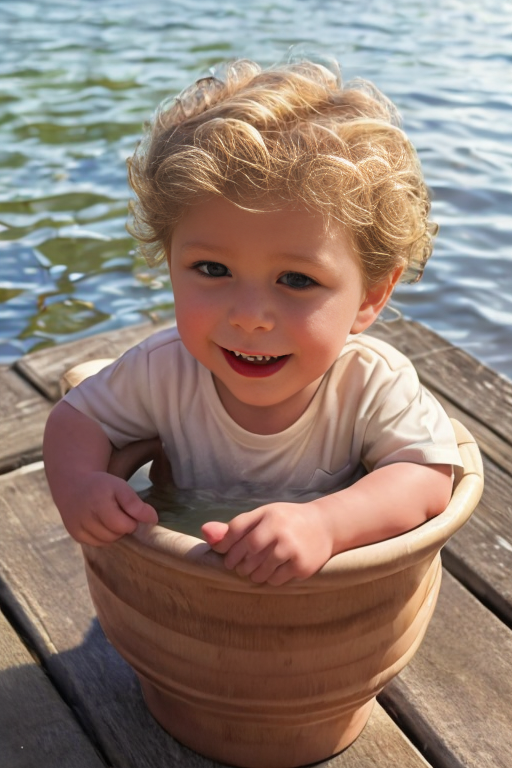
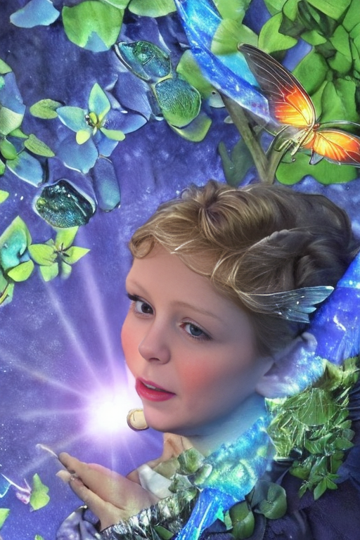
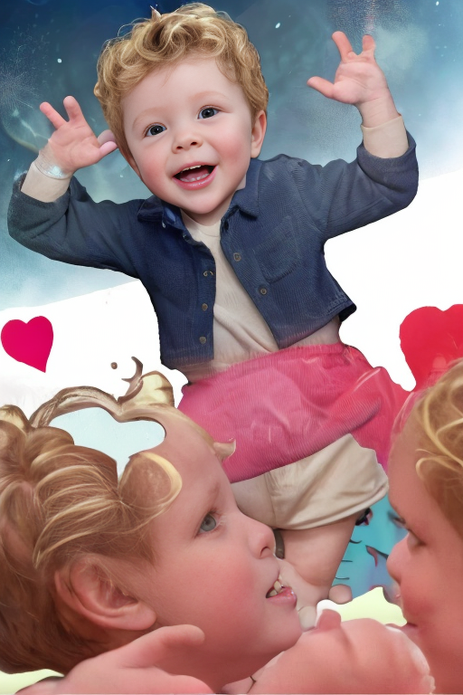
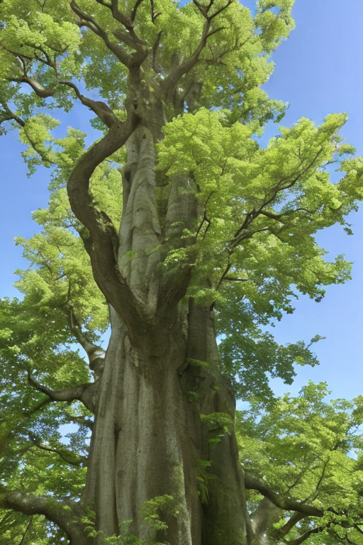
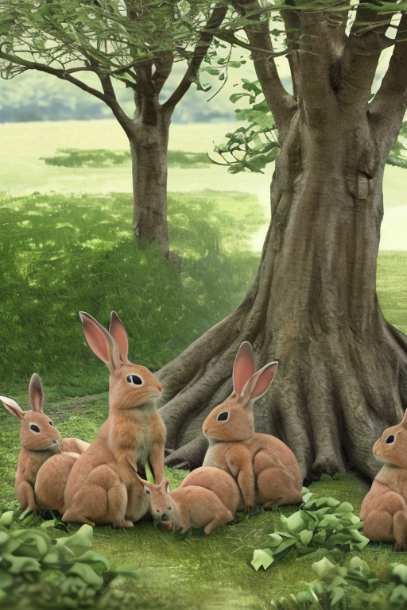
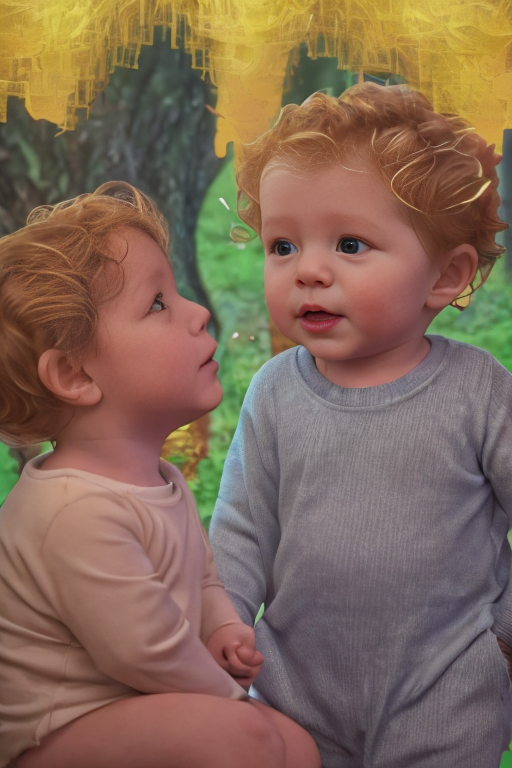

Stories

Once upon a time, in a quaint little village nestled between rolling hills and a sparkling lake, lived a curious and adventurous boy named Gavin.
Gavin was known for his insatiable curiosity and boundless energy. He loved nothing more than exploring the woods and fields surrounding his home.

One sunny morning, as Gavin played by the lake, he spotted something glinting in the shallow water.

He waded out into the cool water, his eyes fixed on the mysterious object.
As he approached, he saw it was a beautiful blue stone, bigger than any he had ever seen.

Gavin carefully picked up the stone and examined it, running his fingers over its smooth surface.

Suddenly, the stone began to glow with a soft light, and a tiny voice spoke from within.

The voice belonged to a magical creature named Pixie, who had been trapped inside the stone for centuries.

Pixie thanked Gavin for freeing her and offered him a special gift in return.
Gavin was thrilled at the prospect of a magical gift and eagerly listened as Pixie explained that it would be a seed, which when planted, would grow into a magical tree.

Together, they returned to Gavin's village, where they found a secluded spot in the forest for the tree to be planted.

Gavin carefully planted the seed and watered it daily, watching with excitement as it began to grow.

The magical tree grew quickly, its branches spreading wide and its leaves shimmering in the sunlight.

As the weeks passed, Gavin noticed that animals were drawn to the tree and would often gather around it.

One day, as Gavin sat beneath the tree, he heard a commotion in the village.

He ran back to find his village under attack by a wicked sorcerer who sought to steal the magical tree for his own gain.

Gavin rallied the animals and together they bravely fought off the sorcerer, protecting their beloved magical tree.

The villagers were grateful to Gavin and the animals for their bravery and celebrated with a grand feast.

From that day on, Gavin was hailed as a hero and his magical tree became a source of wonder and joy for all.

As for Pixie, she continued to live within the tree, granting wishes to those who were kind and pure of heart.

And Gavin lived out his days exploring the woods, discovering new adventures around every bend, always knowing that he had a magical friend by his side.